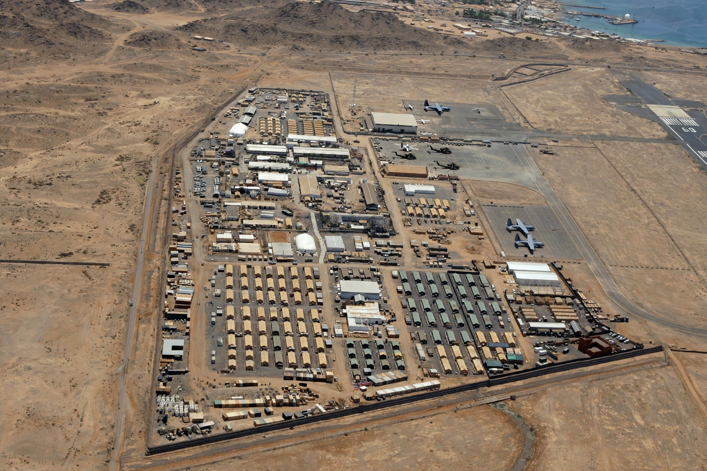

Camp Lemonnier is a United States Naval Expeditionary Base situated next to Djibouti–Ambouli International Airport in Djibouti City, and home to Combined Joint Task Force – Horn of Africa (CJTF-HOA). It is the only permanent US military base in Africa.
| Camp Lemonnier | |
|---|---|
 | |
| Location | Djibouti City, Djibouti |
| Type | Naval expeditionary base |
| Controlled by | US Navy / AFRICOM |
| Garrison | CJTF-HOA |
The camp was originally a French Foreign Legion post, named for French general Émile-René Lemonnier, killed in Indochina in 1945. The US established a presence in 2002 after the 11 September attacks, taking over the camp in 2003; it expanded greatly and became a hub for counterterrorism, anti-piracy and drone operations across the Horn of Africa and Yemen.
Several thousand US and allied personnel are assigned there. The base supports operations against al-Shabaab and other groups, maritime security in the Gulf of Aden, and regional training. In 2014 the US signed a long-term lease extension with Djibouti. Nearby Chabelley Airfield supports remotely piloted aircraft.
Recreated from memory.